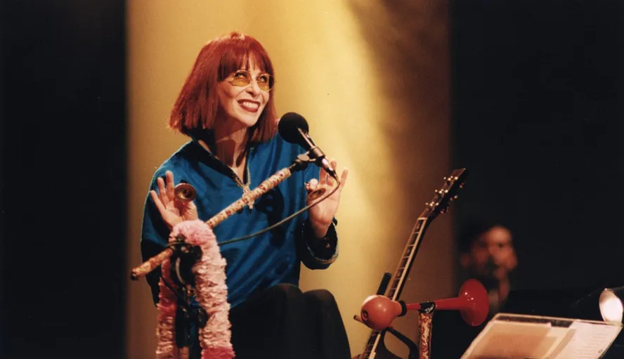

Rita Lee, que morreu na noite de segunda-feira 08/05 em São Paulo aos 75 anos, foi uma das artistas mais censuradas durante a ditadura militar brasileira, período entre 1964 e 1985, e também chegou a ser presa durante o regime. Era 1976 e ela estava grávida do primeiro filho, Beto Lee. Na época, o Deic (Departamento Estadual de Investigações Criminais) legou que ela estava com drogas em casa.
A artista relembrou o episódio em “Rita Lee: uma autobiografia”, lançada em 2016. Ela contou que a própria polícia espalhou a notícia de sua prisão. “Me botaram sentada frente ao delegado e sobre a mesa dele uma pilha de cannabis já dixavadinha, pronta para enrolar. Erva de ótima qualidade, aliás. ‘A senhora tem algo a dizer sobre isto aqui que meus homens encontraram na sua residência?’. ‘Isso não é meu, seu delegado. Estou grávida e no momento não uso drogas. Nem Coca-Cola, pro senhor ter uma ideia. Eu vi quando seus homens colocaram isso na minha casa, pode perguntar para minha madrinha que também estava lá”, escreveu a artista sobre o episódio. Na ocasião, segundo o livro, ela recebeu a visita de Elis Regina (1945 – 1982), que ficou sabendo de sua prisão e foi até o local.
Das dezenas de trechos e músicas de Rita Lee censurados durante a Ditadura, uma delas foi “As duas faces de Eva”, de 1981. De acordo com documentos do Arquivo Nacional, os censores acharam impróprio o trecho: “Mulher é um bicho esquisito, todo mês sangra”. “Poderá também referir-se ao ciclo menstrual da mulher, o que suscitará indagações precoces em torno do assunto”, disseram os censores. De acordo com o Arquivo, a gravadora de Rita na época, a Sigla, recorreu da decisão. A defesa argumentou que “a existência do ciclo menstrual não é mais motivo de vergonha ou medo”. “Lembrando ainda da grande quantidade de peças publicitárias, ‘nem sempre de bom gosto’, dedicadas à venda de absorventes internos veiculadas pela televisão, revistas e jornais. Se a ninguém ocorre proibir a propaganda de absorvente ‘aderente à calcinha’ ou que ‘permite todos os movimentos’, ou “rigorosamente invisível’ [um desses, mostrando a foto de uma linda mulher montada em uma bicicleta, com um sumaríssimo short], por que vedar-se a menção da causa dessa propaganda, que é o sangramento mensal?”, argumentou a defesa.